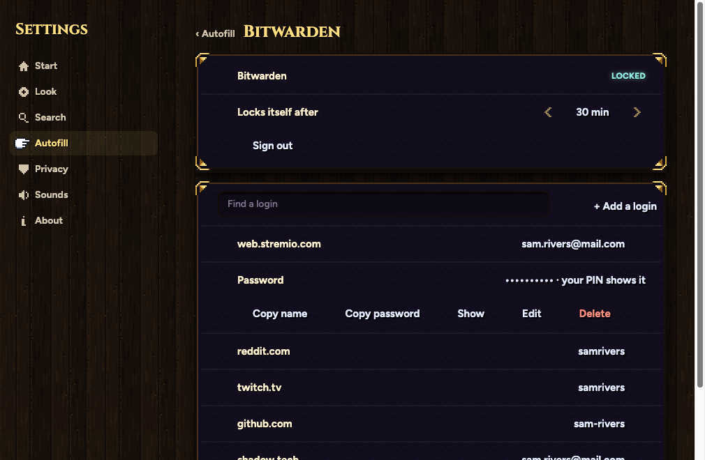
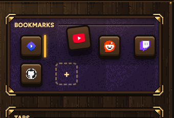

When a site doesn't answer, a little black cat keeps you company: three to pick from. Then Bitwarden and your logins, made clear and in Samara's own family, and bookmarks you can drag.
The same page for every kind of failure, only the words change (below). Try again reloads; Go back returns. Drawn at 4x, every pixel square.
A · Sitting by the pulled plug
example.com took too long. It may be down for now.
B · Asleep on the lantern
Your Mac isn't connected to the internet. The cat will wait.
C · Waiting at the door
example.com answered, but this page doesn't exist.
| Didn't answer | This site isn't answering · site took too long. It may be down for now. |
| No internet | You're offline · Your Mac isn't connected to the internet. |
| Page not found | That page isn't here · site answered, but this page doesn't exist. |
| Anything else | Couldn't reach this site · site can't be found. Check the address. |
In the asks family, Bitwarden's own blue. Four moments, so you always know: waiting for you, checking, wrong, unlocked. After it opens once, your PIN does it from then on.
Only when the login worked and Bitwarden doesn't have it yet. Never for this site means it never asks there again.
sam.rivers@mail.com on web.stremio.com, to Bitwarden.
Ghost letters from your emails and your saved logins; Tab or the right arrow takes them, typing on ignores them. The light comes only where a saved login can fill.
A site with no saved login: just the ghost letters
A site with a saved login: the light offers it
No new chapter: the Bitwarden page you have, with your logins under it. Search, then each row opens to copy, show (your PIN first), edit or delete; Add a login at the top.

Pick one up and it lifts with a little tilt; the others slide apart where it will land; let go and it drops in with Samara's spring.
